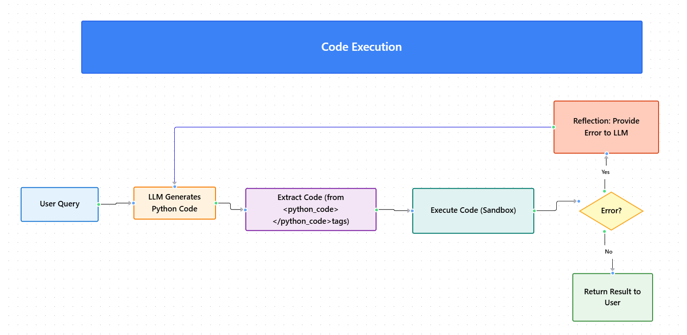

Module 3 — Episode 4
Training:Agentic AI Training
🎯 Learning Objectives
By the end of this episode, you will be able to:
- ✅ Enable LLMs to dynamically generate and execute code to solve complex tasks
- ✅ Implement safe and effective code execution workflows using Python and sandboxing
- ✅ Diagnose and mitigate risks associated with arbitrary code execution in agentic systems
🧭 Overview
This episode explores how agentic AI systems can enhance their reasoning and problem-solving capabilities by writing and executing code.
Instead of building a separate tool for every operation, developers can empower LLMs to generate executable code dynamically.
This approach is commonly used in math solvers, data analysis assistants, and autonomous coding agents.
You’ll also learn about execution safety, reflection loops, and sandboxing strategies to prevent unintended damage.
🧱 Prerequisites
Readers should already understand:
- Basics of tool invocation and function calling in LLM applications
- Python fundamentals, including the
exec()function - Concepts from Module 3, Episode 3 – Reflection
🔑 Core Concepts
- Code Execution – Allowing the LLM to generate and run code (e.g., Python) to compute results beyond its static reasoning capacity.
- Reflection Loop – Feeding error messages from failed code execution back to the model so it can correct and retry.
- Sandbox Environment – A controlled runtime (e.g., Docker, E2B) where potentially unsafe code can be executed without risking the host system.
- Dynamic Tooling – Instead of hardcoding tools for every operation, LLMs can compose and execute custom logic on demand.
🖼 Visual Explanation
 Caption:This diagram shows the code execution loop where an LLM generates Python code, executes it in a sandbox, and returns results. If errors occur, the reflection mechanism prompts revision and retry.
⚙️ Technical Breakdown
How It Works
1. Prompt Construction:The LLM is instructed to output executable code between special tags, e.g.:
<executePython>
# Python code here
</executePython>
The application uses pattern matching (e.g., regex) to capture the code block between these tags.
3. Execution:The extracted code is executed using:
exec(code_block)
or sent to a sandbox environment.
4. Result Handling:The computed result is passed back to the LLM, which formats a human-readable answer.
5. Reflection (Optional):If execution fails, the error message is returned to the LLM for correction and re-execution.
Why It Works
- LLMs can reason symbolically by writing code, effectively extending their reasoning capacity beyond text generation.
- Code execution provides deterministic, verifiable outputs (e.g., precise math results).
- Reflection loops allow iterative self-correction, improving accuracy and robustness.
When To Use It
✅ Ideal Scenarios- Mathematical or logical problem solving
- Data transformation or statistical analysis
- Automated scripting or simulation tasks
- Running untrusted or user-supplied code without isolation
- Handling sensitive data without sandboxing
- Performance-critical environments where code execution overhead is unacceptable
Trade-offs & Limitations
- Security Risk: Arbitrary code execution can delete files or leak data if not sandboxed.
- Performance Overhead: Executing code adds latency compared to direct reasoning.
- Error Handling Complexity: Requires careful management of exceptions and retries.
- Limited Observability: Debugging generated code can be non-trivial.
Performance Considerations
- Use lightweight sandbox environments (e.g., E2B, Docker) to balance safety and speed.
- Cache frequent computations to reduce redundant execution.
- Limit execution time and memory via sandbox configuration to prevent runaway processes.
💻 Code Examples
Minimal Example
import re
# Example LLM output
llm_output = """
<executePython>
import math
result = math.sqrt(2)
print(result)
</executePython>
"""
# Extract code between tags
pattern = r"<executePython>(.*?)</executePython>"
code_block = re.search(pattern, llm_output, re.DOTALL).group(1)
# Execute safely (simplified example)
try:
exec_globals = {}
exec(code_block, exec_globals)
except Exception as e:
print("Execution failed:", e)
Reflection Loop Example
for attempt in range(3):
try:
exec(code_block, exec_globals)
break
except Exception as e:
# Send error message back to LLM for correction
code_block = llm_generate_fixed_code(str(e))
🧩 Best Practices
- Always sandbox LLM-generated code to prevent file system or network damage.
- Implement execution limits (CPU time, memory, I/O).
- Log all code executions for auditing and debugging.
- Where possible, validate generated code before execution.
🚀 Next Steps
In the next episode, we’ll explore the Model Context Protocol (MCP) — a new standard that simplifies tool integration and allows LLMs to access a shared ecosystem of capabilities.